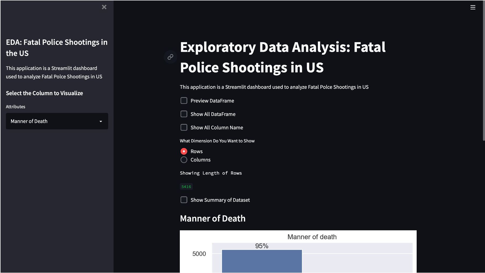
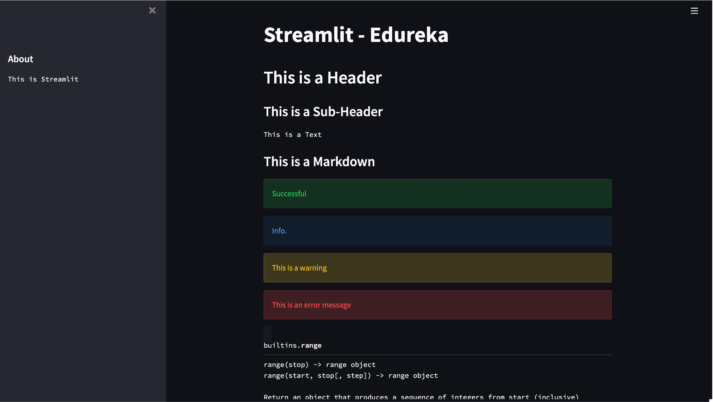

Project 1
In this project, I created a Streamlit Dashboard to analyze Fatal Police Shootings in the US by performing Uni-variate
& Bi-variate analysis on the dataset collected by the The Washington Post
#BLACK LIVES MATTER


In this project, I created an ML model that predicts whether an employee will leave the organization or not. Finally, deployed the model using Streamlit
In this project, I uncovered the factors that leads to employee attrition and explored the reasons as to why people are leaving the organization by creating visualizations using Seaborn

The Video Game Business has been on a downward trend for quite some time now, because of which many gaming companies are shutting down their operations. In this project, I analysed and visualized the dataset of Video Games Sales from the year 1980 till around 2015 to understand the trend in Global Sales w.r.t to the Genres using PlotlyExpress.

Streamlit is the fastest way to build and share data apps. Streamlit turns data scripts into shareable web apps in minutes.
All in pure Python. In this project, I created a dashboard that explains different functionalities of Streamlit

Predict Graduate University Admission Chances to help students in shortlisting universities with their profiles. The predicted output gives them a fair idea about their chances for a particular university.
Credit card fraud happens when someone — a fraudster or a thief — uses your stolen credit card or the information from that card to make unauthorized purchases in your name. In this project, I have to built a classification model to identify fraudulent credit card transactions.